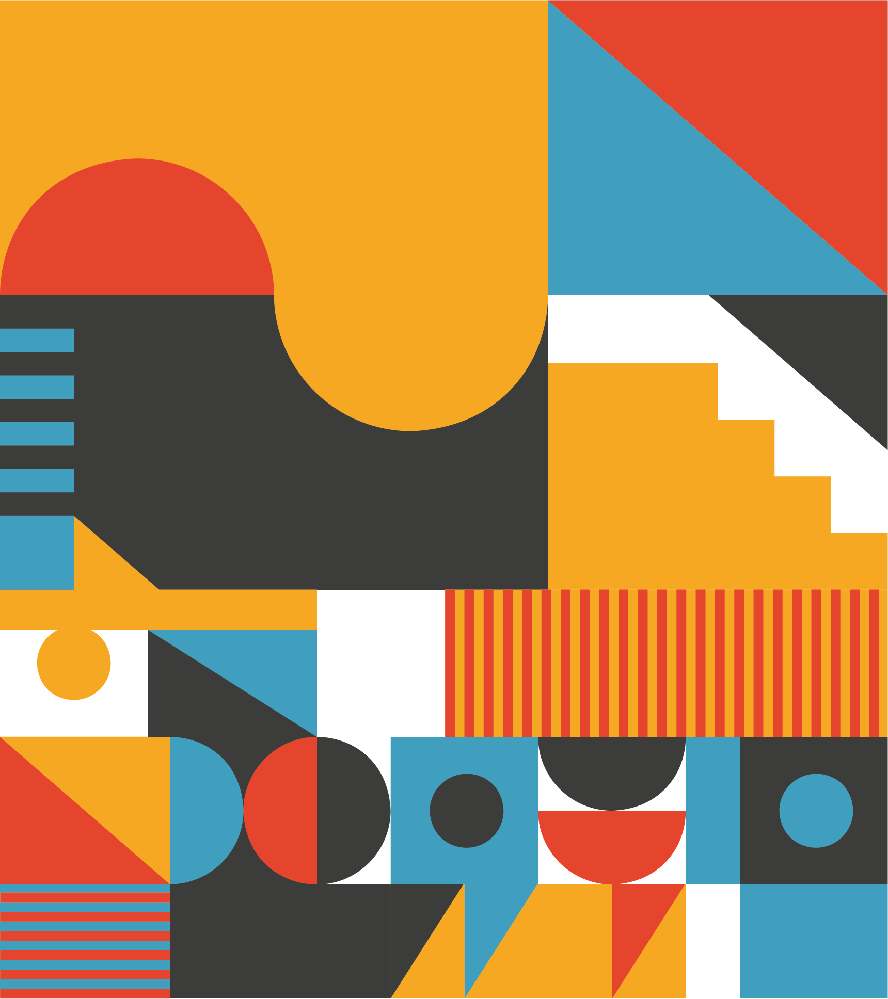

Laura Rossin · Bolzano
Il metodo breve strategico
L’approccio di Giorgio Nardone: capire come una difficoltà si mantiene nel presente e sperimentare nuove risposte nella vita quotidiana.
Approfondisci la psicoterapia
Metodo breve strategico
Il modello breve strategico di Giorgio Nardone, orientato al cambiamento concreto.
Il lavoro clinico si ispira alla Psicoterapia Breve Strategica sviluppata da Giorgio Nardone e alla formazione presso il Centro di Terapia Strategica di Arezzo. L'obiettivo non è restare fermi alla spiegazione del problema, ma capire come si mantiene nel presente e costruire esperienze capaci di sbloccarlo.
- 01 Osservare il blocco Si ricostruisce il funzionamento della difficoltà: quando appare, cosa la alimenta e quali soluzioni tentate non stanno aiutando.
- 02 Cambiare prospettiva Si introduce una lettura strategica del problema, con obiettivi chiari e nuove possibilità di risposta.
- 03 Salire un gradino Si sperimentano azioni concrete tra un incontro e l'altro, verificando passo dopo passo cosa cambia nella vita reale.
La formazione e il modello
La Dott.ssa Laura Rossin si è specializzata presso il Centro di Terapia Strategica di Arezzo, nel modello sviluppato da Giorgio Nardone. Il lavoro parte dal modo in cui la persona vive e affronta la difficoltà, con attenzione alle soluzioni già tentate.
Cosa accade negli incontri
Il dialogo aiuta a definire il problema e gli obiettivi del percorso. Quando opportuno, si concordano esperienze o compiti tra una seduta e l’altra e si osservano insieme gli effetti. Le indicazioni vengono adattate alla persona, non seguite come una ricetta.
Breve non significa una scadenza uguale per tutti
L’approccio cerca interventi mirati, ma durata e frequenza si valutano durante il percorso. Non è possibile promettere un risultato o un numero di incontri in anticipo: l’andamento viene verificato e discusso insieme.